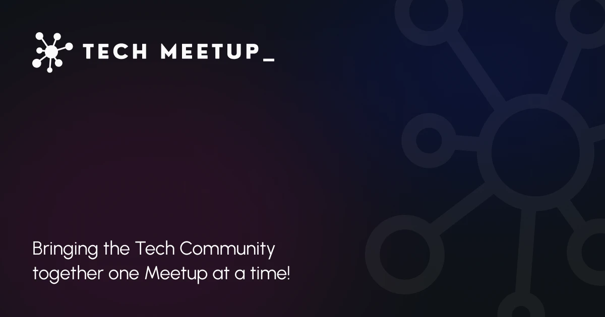

Hi, i am a passionate Backend Developer with extensive experience in Python and Django, specializing in building robust, scalable applications. My expertise includes designing and developing RESTful APIs, database management, and optimizing server-side performance. In addition to my backend skills, I also possess good knowledge of frontend technologies, allowing me to deliver well-rounded solutions with a focus on seamless user experience. I thrive in collaborative environments and enjoy tackling complex problems to create efficient and innovative solutions.
Projects
Blog
I developed a full-stack blog application using Django, where users can explore and interact with various blog posts. The application allows users to save posts they like, offering a personalized experience, and browse through different categories for easier navigation. I utilized Django's robust backend features to manage user authentication, data storage, and dynamic content filtering, while ensuring a seamless and responsive frontend. This project highlights my ability to build scalable full-stack applications with Django, combining both backend functionality and frontend design for an engaging user experience.

Tech Meetup
I built a full-stack meetup application in Django designed to connect aspiring and innovative developers with tech events happening around them. The platform allows users to discover current events, filter by location and interests, and stay informed about upcoming tech meetups. By integrating Django's backend features, I handled user registrations, event management, and real-time updates, while ensuring a smooth and responsive user experience. This project showcases my skills in creating dynamic, location-based applications with both backend logic and an intuitive frontend.
To-Do App
I developed a full-stack to-do application using Django, enabling users to easily manage tasks by creating, updating, and deleting them. The app features a simple and intuitive interface for task management, allowing users to track their progress efficiently. I utilized Django’s powerful backend for task storage and user authentication, ensuring data persistence and security. This project highlights my ability to build functional web applications with Django, providing both a user-friendly frontend and a robust backend to manage tasks seamlessly.